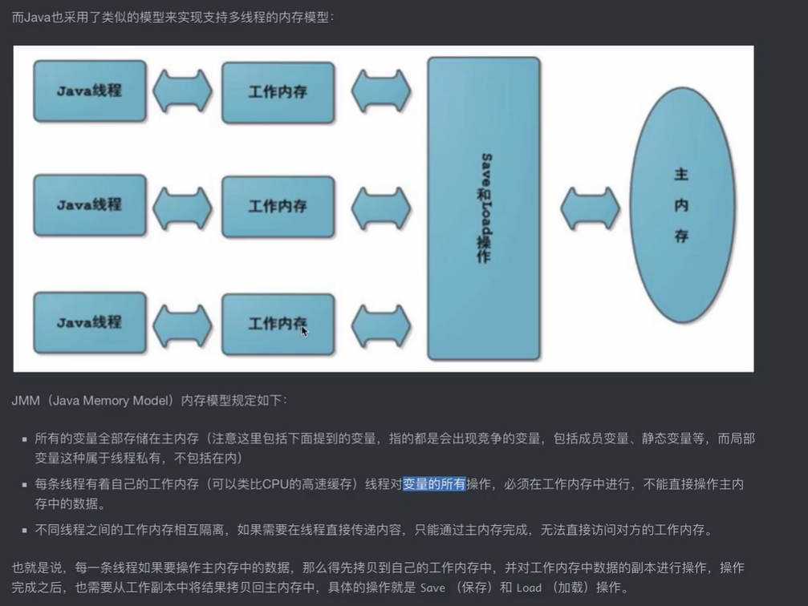
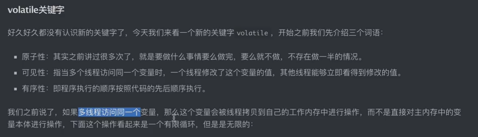
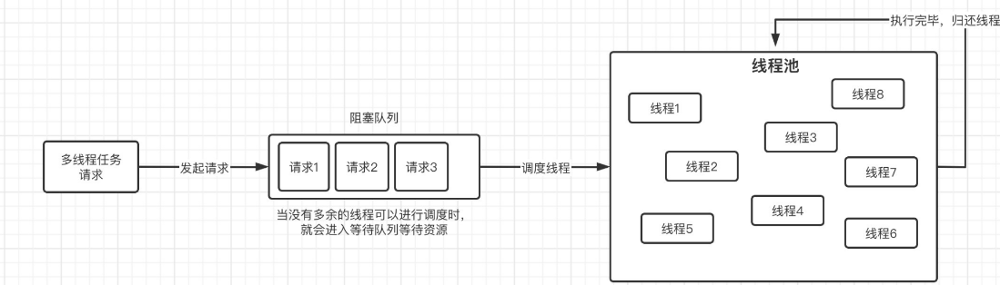

Java-Concurrent

Java 并发编程
轻量级锁：
检查当前对象的mark word是否有被其他线程占用，假如没有就会在当前栈帧里面建立一个 锁记录，复制并存储当前对象的mark word 信息。
不像重量级锁需要向系统申请互斥量，
CAS（无锁算法）

显然，当cas失败的时候，说明有线程进入了这个同步代码块，这个时候，虚拟机将会检查 当前对象的mark word是否指向当前对象的栈帧，是的话就说明当前已经获得锁，否则不是-》退化为重量级锁(不可逆) 解锁时，同样使用CAS算法操作，同时唤醒挂起的线程
偏向锁
当某个锁频繁的被同一个线程获取，对轻量级锁进行优化，所以偏向锁专门为单个线程服务，此时，无须再进行CAS操作，当其他线程 又开始抢锁，偏向锁可能退化为轻量级锁。注意当调用对象的hashCode（）方法，由于mark word 数据结构无法 保存hash值，偏向锁直接退化为轻量级锁。
锁的退化不可逆
锁消除和锁优化
代码块中有可能不会总是出现请求锁和释放锁的问题，（比如循环中加锁），此时锁为了优化出现锁消除和锁优化
Java内存模型（JMM）

主内存： 存放对象实例的部分 工作内存：虚拟机栈的部分，放入cpu的高速缓存里面。 自增操作不是由一个指令实现的！！！包括获取，修改和保存
class Test{
private static volatile int sum=0;//成员变量,这样的变量必须是当前的对象所拥有的
//加入了volatile关键字之后，线程之间可以感知彼此的值
@Test
void LockTestAdd() throws InterruptedException {
//没有加锁的时候，由于线程之间不能感知对方的值，最终结构可能不会是200
Thread th1 = new Thread(() -> {
for (int i = 0; i < 100; i++)
sum++;
});
Thread th2 = new Thread(() -> {
for (int i = 0; i < 100; i++)
sum++;
});
th1.start();
th2.start();
Thread.sleep(100);
System.out.println(sum);
}
}
重排序
由于JVM虚拟机和编译器的优化，指令可能出现重排序，在这种情况下可能出现不符合预期的情况
volatile关键字（无法保证原子性，但能保证可见性）

load和save操作，将主内存中的变量拷贝到本地，只对本地变量进行操作。
volatile实现原理就是改变成员变量时，save的工作区的变量无效。重新更新主内存中的变量值， volatile关键字会禁止指令重排序。

class VolatileTest{
private static volatile int sum=0;//成员变量,这样的变量必须是当前的对象所拥有的
//加入了volatile关键字之后，线程之间可以感知彼此的值,但还是无法保证原子性操作，不能达到预期效果
@Test
void LockTestAdd() throws InterruptedException {
//没有加锁的时候，由于线程之间不能感知对方的值，最终结构可能不会是200
Thread th1 = new Thread(() -> {
for (int i = 0; i < 1000; i++)
sum++;
});
Thread th2 = new Thread(() -> {
for (int i = 0; i < 1000; i++) {
sum++;
}
});
th1.start();
th2.start();
Thread.sleep(100);
System.out.println(sum);
}
}
JVM编译器下面的顺序执行：
Happens Before 原则（之前的对之后的可见）
程序次序规则，监视器锁原则，volatile关键字原则（写操作在读操作之前），
start(线程启动规则)
A线程用start调用B线程，那么A在B之前（A happens before B）
join线程加入规则
A线程join线程B，那么B在A之前（B happens before A）
程和线程的区别
程序软件 > 进程 > 线程
锁的框：Lock
为了代替传统的synchronized,notify,wait,notifyAll关键字，Lock接口->ReentrantLock可重入锁

可重入锁（排他锁）
多次加锁，其他线程想要得到锁需要把多次的锁释放才可以获取这把锁
当存在线程想要获取锁但是锁没有释放的时候，此时这些线程将会进入线程队列里面
公平锁和非公平锁（AQS）

公平锁始终保持先到先得到锁，非公平锁则是在等待队列中所有等待线程同时尝试获取锁，获取不到则再次进入等待队列
ReentrantLock lock=new ReentrantLock(false);//公平锁不一定总是保持公平。队列同步器
Runnable runnable=()->{
System.out.println(Thread.currentThread().getName() + "开始尝试获取锁资源");
lock.lock();
System.out.println(Thread.currentThread().getName() + "成功😺😺😺😺😺😺😺😺😺获取锁资源");
lock.unlock();
};
for (int i = 0; i < 10; i++) {
new Thread(runnable,"T"+i).start();
}
读写锁：
除了可重入锁之外，还有一种类型的锁叫做读写锁，当然它并不是专门用作读写操作的锁， 它和可重入锁不同的地方在于，可重入锁是一种排他锁，当一个线程得到锁之后，另一个线程必须等待其释放锁，否则一律不允许获取到锁。而读写锁在同一时间，是可以让多个线程获取到锁的，它其实就是针对于读写场景而出现的。
读写锁维护了一个读锁和一个写锁，这两个锁的机制是不同的。
读锁：在没有任何线程占用写锁的情况下，同一时间可以有多个线程加读锁。
写锁：在没有任何线程占用读锁的情况下，同一时间只能有一个线程加写锁。
显然读锁是可以重复获取的但是写锁不能，当一个线程同时拥有写锁和读锁的时候，先申请读锁 然后释放写锁，此时其他的线程又可以获取读锁，只剩下读锁，此时称之为“锁降级”。 在仅仅持有读锁的时候去申请写锁，称为“锁升级”，这时候ReentryReadWriteLock类不支持。
队列同步器AQS（AbstractQueuedSynchronizer）
继承关系：Lock-> Sync -> AbstractQueuedSynchronizer
多线程并发环境下的ABA问题
//ABA问题的版本号解决方法
AtomicReference<String> atomicReference=new AtomicReference<>("A");
System.out.println(atomicReference.compareAndSet("a", "c"));
String hello = "hello";
String world = "world";
Runnable r=()->{
System.out.println(atomicReference.compareAndSet("A", "B"));
};
for (int i = 0; i < 100; i++) {
new Thread(r).start();
}
可以看到多个线程尝试去修改的时候出现了一个true
解决办法：添加版本号，每次修改的时候对版本号（stamp）进行修正
并发容器
比如在对链表添加元素的时候，还没有完成对链表扩容之前，其他线程插队，非法插入元素，就会造成数组越界的报错。
- ConcurrentHashMap:在jdk1.7之前的实现方法，比如在原子类里面实现LongAdder具有压力分散的思想，提高了性能，选择将数据一段一段的存储，这样就减少了等待，当线程访问锁的时候只占用锁的一小部分
- jdk8之后，实现方法是通过cas算法配合锁机制实现的。由于HashMap利用了哈希表，容量越大，加锁的粒度就会越细。
//原子类的测试操作
//ABA问题的版本号解决方法
CopyOnWriteArrayList<Object> objects = new CopyOnWriteArrayList<>();
//读取不加锁，写数据需要加锁，所以性能还行
//专用于多线程环境下的容器
LinkedList<Object> list = new LinkedList<>();//没有发生并发异常
ArrayList<Object> list1 = new ArrayList<>();
ConcurrentHashMap<Integer, String> map = new ConcurrentHashMap<>();
HashMap<Integer, String> hashMap = new HashMap<>();
Runnable r=()->{
for (int j = 0; j < 100; j++) {
int finalI=j;
objects.add("aaa");
map.put(finalI,"aaa");
hashMap.put(finalI,"aaa");
}
};
for (int i = 0; i < 100; i++) {
new Thread(r).start();
}
TimeUnit.SECONDS.sleep(1);
阻塞队列（BlokingQueue）
生产者消费之模型：
//测试阻塞队列实现生产者消费者模型
BlockingQueue<Object> queue=new ArrayBlockingQueue<>(1);//窗口只能放一个菜，阻塞队列的容量
Runnable supplier=()->{
while (true){
try {
String name = Thread.currentThread().getName();
System.err.println(time()+"生产者"+name+"正在准备餐品");
TimeUnit.SECONDS.sleep(3);
System.err.println(time()+"生产者"+name+"已出餐");
queue.put(new Object());
}catch (InterruptedException e){
e.printStackTrace();
break;
}
}
};
Runnable consumer=()->{
while (true){
try {
String name = Thread.currentThread().getName();
System.out.println(time()+"消费者"+name+"正在等待餐品");
queue.take();
System.out.println(time()+"消费者"+name+"已取餐");
TimeUnit.SECONDS.sleep(4);
System.out.println(time()+"消费者"+name+"已吃完");
}catch (InterruptedException e){
e.printStackTrace();
break;
}
}
};
for (int i = 0; i < 2; i++) {
new Thread(supplier,"supplier"+i).start();
}
for (int i = 0; i < 3; i++) {
new Thread(consumer,"consumer"+i).start();
}
}
public static String time(){
SimpleDateFormat format = new SimpleDateFormat("HH:mm:ss");
return "["+format.format(new Date())+"]";
}
常见的阻塞队列：ArrayBlokingQueue(有界缓冲阻塞队列),SynchronousQueue(无缓冲阻塞队列),LinkedBlokingQueue(无界带缓冲阻塞队列)
public boolean offer(E e) {
Objects.requireNonNull(e);//检查当前的队列是否为空
final ReentrantLock lock = this.lock;//对当前线程加锁
lock.lock();
try {
if (count == items.length)
return false;
else {
enqueue(e);
return true;
}
} finally {
lock.unlock();
}
}
public E take() throws InterruptedException {
final ReentrantLock lock = this.lock;
lock.lockInterruptibly();
try {
while (count == 0)
notEmpty.await();//当当前线程读取到队列为空时，由于take操作时阻塞的，需要挂起当前线程，等待直到队列里面有值
return dequeue();
} finally {
lock.unlock();
}
}
SynchronousQueue(没有任何容量，插入和取出是一一对应的)
SynchronousQueue<String> queue=new SynchronousQueue<>();
new Thread(()->{
try {
System.out.println(queue.take());
} catch (InterruptedException e) {
throw new RuntimeException(e);
}
}).start();
queue.put("sss");
这是一个特殊的队列，内部维护了一个抽象类Transfer（put和take操作糅合在一起了）， 里面有一个方法：transfer（E e,bolean timed,long nanos）直接通过生产者和消费者模型来实现数据的传递。 当新的元素put进去线程将会阻塞。直到元素被take。同时这个类维护了公平锁和非公平锁两种方法。

当当前队列里面有元素但是没有线程来取元素时候，就会开启自旋，当自旋一定次数之后还没有来取就会挂起
PriorityBlockingQueue优先队列
构造方法：PriorityQueue
传入容量和函数逻辑（优先逻辑）
DelayQueue延时队列
特殊地方：存储的元素必须是继承自Delayed接口的类，同时元素类必须实现Delayed接口。
使用时可以实现延时出队，按照同时的时候按照优先级（自己实现）进行出队，这样就可以实现缓存了。
底层实现：
public class DelayQueue<E extends Delayed> extends AbstractQueue<E>
implements BlockingQueue<E> {
private final transient ReentrantLock lock = new ReentrantLock();
private final PriorityQueue<E> q = new PriorityQueue<E>(); //通过内部维护的优先队列来实现元素的存储，而不是本身进行存储
}
主要常见的阻塞队列总结如下：
- ArrayBlokingQueue底层通过数组实现的阻塞队列，可以设置初始的容量，换句话容量是固定的
- LinkedTransferQueue
- SynchronousQueue要求入队和出队必须同时进行，一一对应，原因是内部维护了一个抽象类tansfer，需要等到消费者和生产者同时到齐才可以完成交接工作，支持公平和非公平
- PriorityBlokingQueue优先队列，元素的获取顺序按照优先级决定
- DelayQueue能够实现延迟获取元素，同样支持优先级，要求加入的元素必须继承Delayed接口
数据字典
常见的常用的数据，具有分级的特点，现在将比如省份县市地点的信息维护成一张表就可以是实现 据字典，通常具有id，parent_id这些字段，维护父级和子级的关系。
关于ElementUi的数据字典的显示方法就是检查hasChildren字段的值进行渲染
线程池
引入原因：频繁创建和销毁线程对系统资源的浪费十分严重，为了合理分配和调用系统资源，产生了线程池的技术
实现原理：将已创建的线程复用，利用池化技术，就像数据库连接池一样，我们也可以创建很多个线程，然后反复地使用这些线程，而不对它们进行销毁。
由于线程池可以反复利用已有线程执行多线程操作，所以它一般是有容量限制的，当所有的线程都处于工作状态时，那么新的多线程请求会被阻塞，直到有一个线程空闲出来为止，实际上这里就会用到我们之前讲解的阻塞队列。
